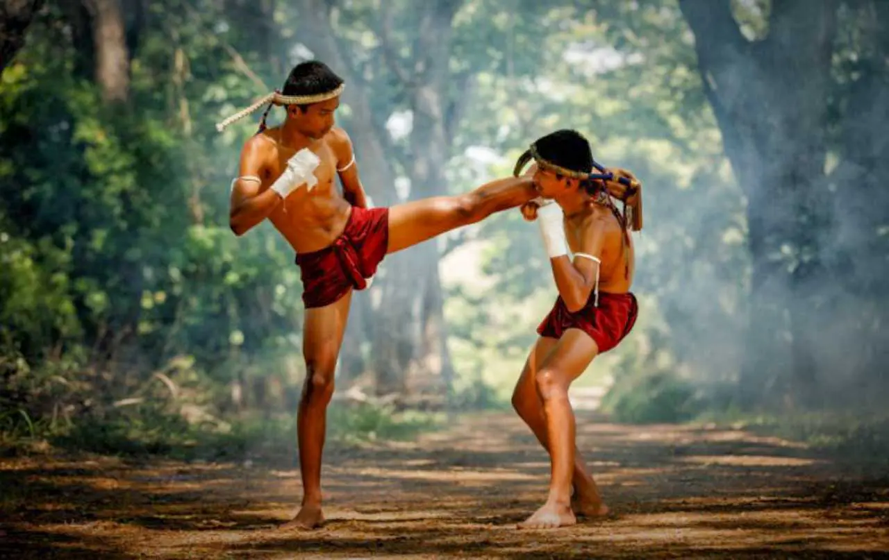

Origem da Academia "Espírito de Luta - Muay Thai"

A Academia Espírito de Luta - Muay Thai nasceu do desejo profundo de compartilhar e vivenciar a essência de uma das mais poderosas e antigas artes marciais do mundo. Fundada em 2015, a ideia da criação surgiu a partir da visão conjunta de Mestre Jhonny Bravo e Mestre Karina, dois entusiastas dedicados à cultura tailandesa e à prática do Muay Thai. Com trajetórias marcadas por anos de treino, ensino e competições, os dois mestres se uniram para tirar do papel um sonho comum: construir uma academia que fosse ao mesmo tempo fiel à tradição do Muay Thai e capaz de evoluir para atender ao público moderno.
Desde sua fundação, a missão inicial da academia sempre foi oferecer mais do que apenas treinamento físico. O Espírito de Luta busca desenvolver não só campeões dentro dos ringues, mas também indivíduos mais fortes e resilientes para enfrentar os desafios da vida. Cada aluno que chega à nossa academia é visto como uma oportunidade de crescimento, e cada treino é uma chance de superação e autoconhecimento.
A Origem do Muay Thai

O Muay Thai, muitas vezes chamado de "A Arte das Oito Armas", tem suas raízes na Tailândia, onde sua prática remonta a séculos atrás. Originado como uma técnica de combate militar, foi desenvolvido como uma forma eficaz de defesa pessoal e luta em batalhas corpo a corpo. Inicialmente, o Muay Thai era utilizado pelos soldados tailandeses para aprimorar a sua habilidade de combate, combinando socos, chutes, joelhadas e cotoveladas, usando todas as partes do corpo como armas.
Com o passar dos anos, o Muay Thai se transformou, passando a ser praticado como uma arte marcial não só de combate, mas também de aperfeiçoamento pessoal. No século XX, a arte começou a ganhar popularidade internacional, sendo reconhecida pela sua intensidade, disciplina e eficácia. Hoje, o Muay Thai é praticado em diversas partes do mundo, com milhões de adeptos que o utilizam tanto como esporte competitivo quanto como método de treino para saúde e condicionamento físico.